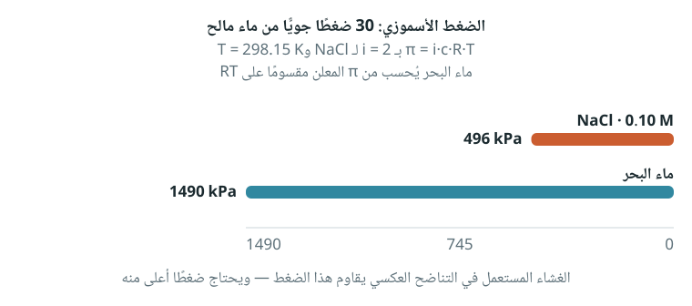

الضغط الأسموزي
Osmotic pressure
الضغط الأسموزي π هو الضغط اللازم لمنع مرور المذيب عبر غشاء شبه منفذ من المحلول المخفف إلى المركز: π = i·c·R·T. وهو يفسّر امتصاص الجذور للماء وضغط الدم. محلول 0.10 mol/L من NaCl عند 25 °C له π = 2×0.10×8.314×298.15 = 496 kPa، أي نحو 5 أضعاف الضغط الجوي.
الغشاء شبه المنفذ يسمح للماء بالمرور ويمنع المذاب. وعندما يكون المحلول أكثر تركيزاً من الجهة الأخرى ينتقل الماء إليه ليخفف التركيز، فيرتفع الضغط. والضغط اللازم لإيقاف هذا الانتقال هو الضغط الأسموزي. وهو خاصية تجميعية تعتمد على عدد الجزيئات لا على نوعها. مثال: ماء البحر بتركيز ملحي نحو 0.60 mol/L من الأيونات له π ≈ 0.60×8.314×298.15 = 1487 kPa = 1.49 MPa، أي نحو 15 ضغطاً جوياً، ولهذا تحتاج تحلية الماء إلى ضغط أعلى من ذلك.
كيف تعمل الظاهرة؟
الماء ينتقل عبر الغشاء شبه المنفذ من الجهة ذات الجهد الكيميائي الأعلى (الماء الأنقى) إلى الجهة ذات الجهد الأقل (المحلول). ووجود المذاب يخفض جهد الماء لأن جزيئات الماء ترتبط به جزئياً وتقل حريتها. والنتيجة تدفق ماء نحو المحلول. ولمنع هذا التدفق يلزم ضغط ميكانيكي على المحلول يرفع جهده الكيميائي حتى يتساوى الوجهان، وهذا الضغط هو الأسموزي. ولهذا يعتمد على عدد الجزيئات المذابة لا على نوعها.
العلاقة بالأرقام
π = i·c·R·T. مثال: محلول 0.10 mol/L NaCl عند 298.15 K: π = 2×0.10×8.314×298.15 = 496 kPa. وضغط الدم الأسموزي نحو 770 kPa (7.7 atm) وهو ما يحفظ حجم الخلايا. وفي تحلية الماء بالتناضح العكسي يلزم ضغط تشغيل أعلى من π: لماء البحر بـπ = 1.49 MPa يُستعمل 5–7 MPa، أي 3–5 أضعاف، لتحقيق تدفق معاكس معقول.
مفاهيم متقاربة
يُفرَّق بين الضغط الأسموزي والانتشار: الأول يحتاج غشاء يمنع المذاب، والثاني لا. ويُفرَّق بينه وبين الضغط الهيدروستاتيكي: الأول ناتج عن فرق تركيز والثاني عن عمود سائل. ويُفرَّق بينه وبين الخاصية التجميعية الأخرى كالانخفاض في ضغط البخار: كلتاهما تعتمد على عدد الجزيئات لكن التعبير مختلف. وأخيراً يُفرَّد بين π المحسوب بقانون فانت هوف وπ المقيس، حيث يختلفان في المحاليل المركزة بمعامل أسموزي.
حدود التطبيق
قانون فانت هوف لا يصف المحاليل المركزة حيث يختلف المعامل الأسموزي عن 1. ولا يصف المحاليل الإلكتروليتية القوية بلا تصحيح النشاط. ولا يصف الأغشية غير المثالية التي تسمح بمرور بعض المذاب. ولا يصف الأنظمة الحيّة بلا مراعاة الجهد الأسموزي للخلايا وجدرها. وأخيراً لا يصف المحاليل الغروية حيث تظهر تأثيرات حجمية إضافية.

| الكمية | القيمة | المصدر |
|---|---|---|
| الضغط الأسموزي لمحلول NaCl 0.10 M | 496 kPa | [1] |
| الضغط الأسموزي لماء البحر | 1.49 MPa | [1] |
| ثابت الغازات R | 8.314 462 618 J/(mol·K) | [2] |
المصادر
- 1 CODATA Value: Boltzmann constant — NIST — CODATA 2022 recommended values (2024). physics.nist.gov/cgi-bin/cuu/Value?k · اطُّلع عليه 2026-11-22
- 2 CODATA Value: Avogadro constant — NIST — CODATA 2022 recommended values (2024). physics.nist.gov/cgi-bin/cuu/Value?na · اطُّلع عليه 2026-11-22
استشهد بهذا المصطلح
الصيغتان مبنيتان من بيانات الصفحة نفسها: العنوان والتاريخ ورابط النسخة المنشورة.
الضغط الأسموزي — Osmotic pressure. (2026). ديوان المعرفة — انفراد. https://infiradev.com/diwan/terms/term-osmotic-pressure.html
@misc{term-osmotic-pressure2026,
title = {الضغط الأسموزي},
titleaddon = {Osmotic pressure},
howpublished = {{ديوان المعرفة — انفراد} — مرجع علمي عربي},
year = {2026},
url = {https://infiradev.com/diwan/terms/term-osmotic-pressure.html},
urldate = {2026-11-22},
note = {مراجعة علمية: تحرير انفراد الآلي — نُشر بأمر عبدالله الهويدي}
}
راجعه: تحرير انفراد الآلي — نُشر بأمر عبدالله الهويدي · 2026-11-22 · آخر تحديث 2026-11-22